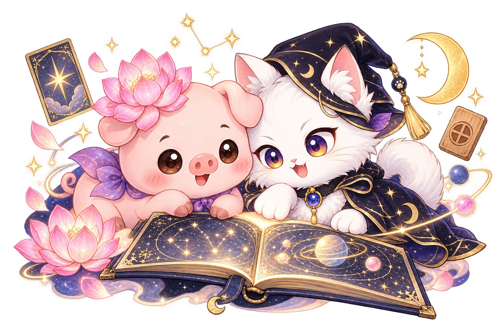
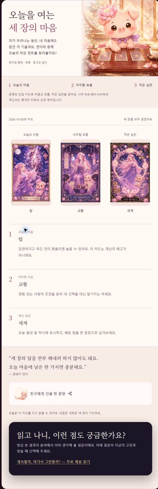
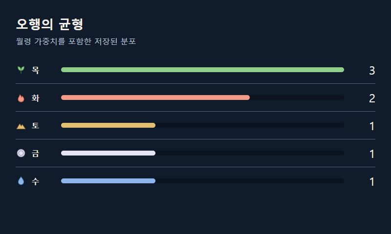
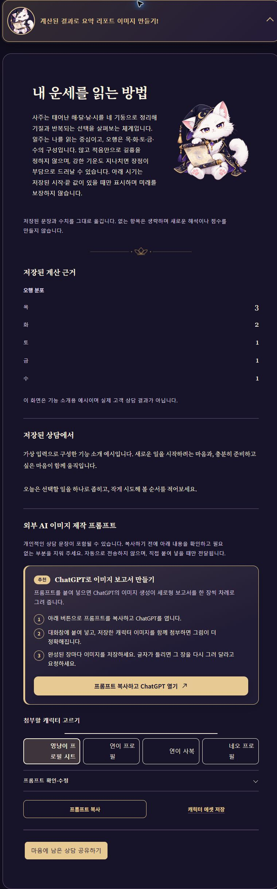

모둠 상담
두 체계 교차분석
서로 다른 관점에서 같은 고민을 살펴보고,
겹치는 해석과 다른 해석을 비교해요.
복잡한 마음을 들여다보고,
다음 선택의 실마리를 찾는 시간.
따뜻한 꽃돼지 연이와 도도하지만 다정한 영냥이.
무료 타로부터 나만의 상담 리포트까지 만나보세요.

“내가 왜 이런 선택을 반복할까?”
“지금, 무엇부터 정리하면 좋을까?”
좋은 말 한 줄보다, 내 상황을 이해할 단서가 필요할 때가 있죠. 기질과 관계, 일과 돈의 흐름을 살피고 지금 해볼 수 있는 선택을 정리해 보세요.
질문을 중심에 두고,
근거에서 행동까지 이어집니다.
영냥이는 계산된 자료와 당신의 질문을 바탕으로 이야기를 풀어주는 AI 상담가예요. 반복되는 패턴과 강점을 짚고, 오늘 시도해 볼 작은 행동까지 연결합니다.
지금 궁금한 이야기에 맞는 시선을 골라보세요.
서로 다른 체계는 각자의 근거와 언어로 읽습니다.
무료 기본 기능과 유료 상세 상담은 제공 범위가 달라요.
초융합 운세는 체계별 근거를 나란히 읽어요.
공통점은 선명하게, 차이는 새로운 질문으로.
두 체계 교차분석
서로 다른 관점에서 같은 고민을 살펴보고,
겹치는 해석과 다른 해석을 비교해요.
여섯 체계 전체 통합
기질·관계·일과 돈을 넓게 연결하고,
지금의 선택과 실천 순서를 정리해요.
정답을 대신 정하기보다,
내가 납득할 선택을 돕는 상담.
연이의 무료 세 장 타로.
오늘의 마음, 마주할 흐름, 작은 실천.
로그인 없이 카드를 펼치고 오늘의 질문을 떠올려 보세요. 긴 상담이 낯설다면 무료 기본 운세부터 천천히 나에게 맞는 방식을 찾아도 좋아요.
무료 타로 펼치기무료 세 장 타로와 유료 상세 상담은 별도입니다.


다섯 가지 기운의 분포.
숫자보다 중요한 건 그다음 이야기.
목·화·토·금·수를 색상과 아이콘, 수치로 함께 보여줘요. 어떤 힘이 두드러지는지 살펴보고, 그 특징이 성격과 관계, 선택 습관에 어떻게 연결되는지 읽어보세요.
한 가지 기운이 많거나 적다는 이유만으로 좋고 나쁨을 단정하지 않아요. 계산 근거와 전체 맥락을 함께 살펴봅니다.
표시된 값은 가상 입력의 계산 예시이며 적중률이나 미래의 점수가 아닙니다.
상담이 끝난 뒤에도
내 이야기는 남습니다.
완료된 상담을 같은 계정으로 다시 열어, 마음에 남은 대목을 확인해요.
상담 내용을 바탕으로 이미지 리포트를 만들 수 있는 문구를 제공해요.
ChatGPT 등 외부 도구에 직접 붙여 넣어 제작해요. 외부 도구의 이용 조건이 적용될 수 있어요.

“정말 제대로 잘 보시는 분과
인연이 닿아 도움 많이 받았습니다.”
“여유를 갖고 한 걸음씩 걸어보겠습니다.”
제작자 네오의 사람 1:1 상담에 남겨주신 게시 동의 후기 중 일부입니다.
영냥이 AI 상담 후기가 아니며 개인의 경험은 결과를 보장하지 않습니다.
가입하면 월정석 500개.
원하는 수량만큼 상담 할인에 사용해요.
2026년 10월 5일 정책 적용 후 기준. 월정석 1개=10원.
지급일부터 30일 유효 · 현금 출금 불가.
할인 적용 가능 여부는 상담 결제창에서 확인해 주세요.
무료 세 장 타로나 기본 운세로 먼저 만나보세요. 내 질문을 더 깊게 다루고 싶을 때 영냥이 상세 상담을 선택하면 됩니다.
서비스에서 상담 기반의 제작 프롬프트를 제공합니다. 이미지는 사용자가 ChatGPT 등 외부 도구에 직접 전달해 제작하는 방식입니다.
10월 5일 정책 적용 후에는 보유 수량 중 원하는 만큼 할인에 사용하고 나머지를 단건 결제할 수 있습니다. 유효기간과 실제 적용 금액은 결제창에서 확인해 주세요.